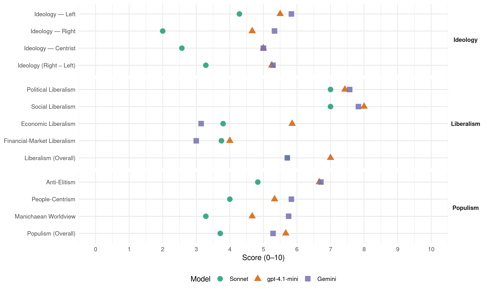

(Cyprus, 2016)
manifesto_id 55110_201605
Get full text: This site shows derived annotations and short verbatim quotes only. The full manifesto text is © Manifesto Project / WZB — obtain it via manifesto-project.wzb.eu using the manifesto_id above.
Headline scores
| Dimension | Sonnet | gpt-4.1-mini | Gemini |
|---|---|---|---|
| Populism (Overall) | 3.7 | 5.7 | 5.3 |
| Anti-Elitism | 4.8 | 6.7 | 6.7 |
| People-Centrism | 4.0 | 5.3 | 5.8 |
| Manichaean Worldview | 3.3 | 4.7 | 5.8 |
| Ideology (Right − Left) | 3.3 | 5.2 | 5.3 |
| Liberalism (Overall) | 5.7 | 7.0 | 5.7 |
| Political Liberalism | 7.0 | 7.4 | 7.6 |
| Social Liberalism | 7.0 | 8.0 | 7.8 |
| Economic Liberalism | 3.8 | 5.9 | 3.1 |
| Financial-Market Liberalism | 3.8 | 4.0 | 3.0 |
Evidence per dimension
Economic Liberalism
Gemini · score 3.0 · verified · chunk 1
“κυριαρχία των αγορών αντί των νόμων που ψηφίζουν τα κοινοβούλια”
Με το TTIP επιχειρείται εκ νέου να κατοχυρωθεί και να διευρυνθεί θεσμικά η κυριαρχία των αγορών αντί των νόμων που ψηφίζουν τα κοινοβούλια των κρατών.
Gemini · score 2.0 · verified · chunk 2
“Δεν στηρίζουμε την υιοθέτηση ενός φιλελεύθερου”
σε βάρος των επερχόμενων γενεών. // Η διαχείριση της οικονομίας πρέπει να γίνεται χωρίς δογματισμούς και πρότυπα αλλά με κυρίαρχο στόχο την αύξηση του βιοτικού επιπέδου χωρίς την ενθάρρυνση του καταναλωτισμού. //Δεν στηρίζουμε την υιοθέτηση ενός φιλελεύθερου μοντέλου ανοικτής οικονομίας
Gemini · score 3.0 · verified · chunk 3
“απορρίπτουμε κάθε μορφή ιδιωτικοποίησης”
1.Ως θέση αρχής, απορρίπτουμε κάθε μορφή ιδιωτικοποίησης. // Η ιδιωτικοποίηση αποτελεί
Gemini · score 4.0 · verified · chunk 4
“εφαρμογή των συλλογικών συμβάσεων είτε πρόκειται”
καθορισμό επαγγελμάτων όπου υπάρχει πραγματική ζήτηση. Οριζόντια εφαρμογή των συλλογικών συμβάσεων είτε πρόκειται για Κύπριο είτα για
Gemini · score 3.0 · verified · chunk 5
“εφαρμοστεί η νομοθεσία για το πλαφόν”
Να εφαρμοστεί η νομοθεσία για το πλαφόν σε βασικά καταναλωτικά προϊόντα.
Gemini · score 4.0 · verified · chunk 6
“Ενεργή συμμετοχή των ιδιωτών στην πολιτισμική ανάπτυξη”
προβολή του (αρχιτεκτονική, βυζαντινός πολιτισμός, συγγράμματα κ.λπ.). //24.Ενεργή συμμετοχή των ιδιωτών στην πολιτισμική ανάπτυξη του τόπου, παροχή κινήτρων
Gemini · score 3.0 · verified · chunk 7
“συμφέροντα του συνόλου των πολιτών και όχι με το προσωπικό κέρδος”
παραλιών ώστε αυτός να συνάδει με τα καλώς νοούμενα συμφέροντα του συνόλου των πολιτών και όχι με το προσωπικό κέρδος των τουριστικών και άλλων επιχειρήσεων.
gpt-4.1-mini · score 6.0 · verified · chunk 1
“καταπολέμησης της γραφειοκρατίας, συμπεριλαμβανομένου της εφαρμογής των νέων τεχνολογιών”
Άμεση λήψη μέτρων καταπολέμησης της γραφειοκρατίας, συμπεριλαμβανομένου της εφαρμογής των νέων τεχνολογιών και την κατάλληλη δια βίου εκπαίδευση των δημοσίων υπαλλήλων.
gpt-4.1-mini · score 4.0 · verified · chunk 2
“Δεν στηρίζουμε την υιοθέτηση ενός φιλελεύθερου μοντέλου ανοικτής οικονομίας”
Δεν στηρίζουμε την υιοθέτηση ενός φιλελεύθερου μοντέλου ανοικτής οικονομίας, όπως προωθείται μέσω των Μνημονίων με την Τρόικα της Ευρωπαϊκής Ένωσης, της Διεθνούς Τράπεζας και της Ευρωπαϊκής Κεντρικής Τράπεζας. //Η κυβέρνηση να παρεμβαίνει στη διαχείριση της κυπριακής οικονομίας για σκοπούς κοινωνικής αλληλεγγύης και ισομερούς ανάπτυξης χωρίς να μετατρέπει το κράτος σε επιχειρηματία.
gpt-4.1-mini · score 6.0 · verified · chunk 3
“Η φορολόγηση των πολιτών πρέπει να είναι δίκαιη και να προστατεύει τους χαμηλά αμειβόμενους”
8.5 Φορολογία και Συντάξεις //Η φορολόγηση των πολιτών πρέπει να είναι δίκαιη και να προστατεύει τους χαμηλά αμειβόμενους. // Επίσης πρέπει να λαμβάνονται υπόψη οικολογικά κριτήρια ή κριτήρια αειφορίας.
gpt-4.1-mini · score 6.0 · verified · chunk 4
“Προώθηση της εξοικονόμησης ενέργειας, σε όλους τους τομείς”
Προώθηση της εξοικονόμησης ενέργειας, σε όλους τους τομείς (π.χ. αφαλάτωση). Στις κατασκευές, να υπάρξει θεσμοθέτηση για μεγαλύτερο συντελεστή θερμομόνωσης σε καινούργια κτίρια με ανάλογα κίνητρα για παλαιά κτίρια.
gpt-4.1-mini · score 7.0 · verified · chunk 5
“Η ενέργεια αποτελεί το βασικό υπόβαθρο για την οργάνωση της ζωής σε διάφορα επίπεδα.”
…14.1 Εισαγωγή //Η ενέργεια αποτελεί το βασικό υπόβαθρο για την οργάνωση της ζωής σε διάφορα επίπεδα. //Έχει άμεση σχέση με τη βιομηχανία, τις μεταφορές, την οικιακή οικονομία και γενικά υπεισέρχεται σε όλες τις εκφάνσεις της οικονομικής και κοινωνικής ζωής ενός τόπου….
gpt-4.1-mini · score 6.0 · verified · chunk 6
“Συνεργασία δημοσίου με ιδιωτικού τομέα για αλληλοσυμπλήρωση των παρεχόμενων υπηρεσιών”
6.Θέλουμε να δουμε συνεργασία δημοσου με ιδιωτικού τομέα για αλληλοσυμπλήρωση των παρεχόμενων υπηρεσιών, όμως ταυτόχρονα θέλουμε εξασφάλιση ότι δεν θα χαθούν οι υπηρεσίες που δίνονται ήδη ή αν όχι αναβάθμιση τους από τον δημόσιο τομέα.
gpt-4.1-mini · score 6.0 · verified · chunk 7
“οικονομία, κοινωνία και οικοσύστημα, δίκαιη εκπροσώπηση”
ένα λαό και μία ιθαγένεια, μία ενιαία οικονομία, κοινωνία και οικοσύστημα, δίκαιη εκπροσώπηση των εθνικών κοινοτήτων στα συλλογικά όργανα διοίκησης σε ένα κράτος δικαίου.
Sonnet · score 3.0 · verified · chunk 1
“κυριαρχία των αγορών αντί των νόμων”
Με το TTIP επιχειρείται εκ νέου να κατοχυρωθεί και να διευρυνθεί θεσμικά η κυριαρχία των αγορών αντί των νόμων που ψηφίζουν τα κοινοβούλια
Sonnet · score 4.0 · verified · chunk 2
“Δεν στηρίζουμε την υιοθέτηση ενός φιλελεύθερου μοντέλου ανοικτής οικονομίας”
Δεν στηρίζουμε την υιοθέτηση ενός φιλελεύθερου μοντέλου ανοικτής οικονομίας, όπως προωθείται μέσω των Μνημονίων με την Τρόικα
Sonnet · score 4.0 · verified · chunk 3
“απορρίπτουμε κάθε μορφή ιδιωτικοποίησης”
Ως θέση αρχής, απορρίπτουμε κάθε μορφή ιδιωτικοποίησης. Η ιδιωτικοποίηση αποτελεί αποξένωση κρατικού πλούτου και δεν αποτελεί τη λύση στο πρόβλημα των Ημικρατικών Οργανισμών
Sonnet · score 4.0 · verified · chunk 4
“άρση των περιορισμών εισαγωγής λόγω της ευρωπαϊκής πορείας”
του μοντέλου ανάπτυξης που έδωσε μονοδιάστατη έμφαση στον τουρισμό και στην πώληση εξοχικής κατοικίας αλλά και την άρση των περιορισμών εισαγωγής λόγω της ευρωπαϊκής πορείας
Sonnet · score 5.0 · mixed · chunk 5
“να εφαρμοστεί η νομοθεσία για το πλαφόν σε βασικά καταναλωτικά προϊόντα”
Να εφαρμοστεί η νομοθεσία για το πλαφόν σε βασικά καταναλωτικά προϊόντα
Sonnet · score 4.0 · mixed · chunk 6
“εμπορευματοποίηση που υπάρχει στον τομέα”
Το σημερινό αδιέξοδο στον τομέα της Υγείας, οφείλεται στην εμπορευματοποίηση που υπάρχει στον τομέα αυτό.
Sonnet · score 4.0 · verified · chunk 7
“Τιμολόγηση του νερού με βάση το πραγματικό κόστος”
Τιμολόγηση του νερού με βάση το πραγματικό κόστος του νερού (περιλαμβανομένου και του περιβαλλοντικού κόστους) ώστε να εμποδίζεται η κατάχρηση
Financial-Market Liberalism
Gemini · score 2.0 · verified · chunk 1
“εξάρτηση από το τραπεζικό σύστημα”
με βασικό στοιχείο τη διαπλοκή //και την εξάρτηση από το τραπεζικό σύστημα (και όχι μόνο) με συγκεκριμένους σκοπούς
Gemini · score 1.0 · verified · chunk 2
“αποτροπή ξεπουλήματος των περιουσιών του Κυπριακού Λαού στα διεθνή τραπεζικά ιδρύματα τοκογλύφους”
δημόσιου φορέα/κρατικής τράπεζας που θα αναλάβει όλα τα πραγματικά μη εξυπηρετούμενα δάνεια, με σκοπό την αποτροπή ξεπουλήματος των περιουσιών του Κυπριακού Λαού στα διεθνή τραπεζικά ιδρύματα τοκογλύφους.
Gemini · score 6.0 · verified · chunk 3
“ενδυνάμωση και η πλήρη ανεξαρτητοποίηση της Επιτροπής Κεφαλαιαγοράς”
Χρειάζεται η ενδυνάμωση και η πλήρη ανεξαρτητοποίηση της Επιτροπής Κεφαλαιαγοράς. // Απαιτούνται θεσμικές
gpt-4.1-mini · score 3.0 · verified · chunk 1
“εξάρτηση από το τραπεζικό σύστημα (και όχι μόνο) με συγκεκριμένους σκοπούς και στόχους”
οικονομικού θαύματος, που στην ουσία είναι ένα απάνθρωπο και ληστρικό «αναπτυξιακό» μοντέλο, που στηρίζεται άμεσα ή έμμεσα από τις κατεστημένες πολιτικές δυνάμεις, με βασικό στοιχείο τη διαπλοκή και την εξάρτηση από το τραπεζικό σύστημα (και όχι μόνο) με συγκεκριμένους σκοπούς και στόχους, που συνάδουν με τα πρότυπα της παγκόσμιας νέας τάξης πραγμάτων.
gpt-4.1-mini · score 3.0 · verified · chunk 2
“Απαιτούμε την ένταξη των πιστωτικών ιδρυμάτων στο νομοθετικό πλαίσιο που διέπει την τοκογλυφία”
11.Την καταπολέμηση της τοκογλυφίας και της αφαίμαξης του Λαού από τη ληστρική διάθεση των εξουσιαστών του. //Απαιτούμε την ένταξη των πιστωτικών ιδρυμάτων στο νομοθετικό πλαίσιο που διέπει την τοκογλυφία και την ενίσχυση του νόμου που αφορά τις καταχρηστικές ρήτρες που παραβιάζουν τα δικαιώματα των καταναλωτών, ώστε να μπορούν οι πολίτες να βρίσκουν το δίκαιο τους γρηγορότερα και εξωδικαστικά.
gpt-4.1-mini · score 6.0 · verified · chunk 3
“Χρειάζεται η ενδυνάμωση και η πλήρης ανεξαρτητοποίηση της Επιτροπής Κεφαλαιαγοράς”
8.7 Χρηματιστήριο //Ο χρηματιστηριακός θεσμός από ρόλο δυναμικής προώθησης της οικονομίας καταντήσε με την έλλειψη σωστής διαχείρισης και του αναγκαίου θεσμικού πλαισίου, ακόμη ένας τρόπος τζόγου. // Χρειάζεται η ενδυνάμωση και η πλήρης ανεξαρτητοποίηση της Επιτροπής Κεφαλαιαγοράς.
Sonnet · score 3.0 · verified · chunk 1
“εξάρτηση από το τραπεζικό σύστημα”
με βασικό στοιχείο τη διαπλοκή και την εξάρτηση από το τραπεζικό σύστημα (και όχι μόνο) με συγκεκριμένους σκοπούς και στόχους
Sonnet · score 2.0 · verified · chunk 2
“δημιουργία δημόσιου φορέα/κρατικής τράπεζας που θα αναλάβει όλα τα πραγματικά μη εξυπηρετούμενα δάνεια”
Την δημιουργία δημόσιου φορέα/κρατικής τράπεζας που θα αναλάβει όλα τα πραγματικά μη εξυπηρετούμενα δάνεια, με σκοπό την αποτροπή ξεπουλήματος
Sonnet · score 6.0 · verified · chunk 3
“ενδυνάμωση και η πλήρης ανεξαρτητοποίηση της Επιτροπής Κεφαλαιαγοράς”
Χρειάζεται η ενδυνάμωση και η πλήρης ανεξαρτητοποίηση της Επιτροπής Κεφαλαιαγοράς
Sonnet · score 4.0 · verified · chunk 4
“λογαριασμών κληρονομικού δικαίου-καταπιστεύματος”
Την απαίτηση για επισημοποίηση, αναγνώριση και δημοσίευση όλων των λογαριασμών κληρονομικού δικαίου-καταπιστεύματος που υπάρχουν και έχουν δημιουργηθεί προς όφελος της Κυπριακής Δημοκρατίας
Political Liberalism
Gemini · score 8.0 · verified · chunk 1
“κατοχύρωση των Ανθρωπίνων και Πολιτικών δικαιωμάτων”
να μπορεί να κτίσει και να διεκδικήσει με αξιοπρέπεια τα οράματα της, δηλαδή: την κατοχύρωση των Ανθρωπίνων και Πολιτικών δικαιωμάτων, // την αξιοπρέπεια του Πολίτη
Gemini · score 8.0 · verified · chunk 2
“κατοχύρωση των πολιτικών δικαιωμάτων”
βάση τις ανάγκες που διαμορφώνονται στις νέες συνθήκες. //Κατοχύρωση των πολιτικών δικαιωμάτων των δημοσίων υπαλλήλων.
Gemini · score 7.0 · verified · chunk 3
“δημοκρατικά εκλελεγμένο δημοτικά συμβούλια”
που θα αποτελεί μετεξέλιξη των σημερινών επαρχιακών διοικήσεων, // με δημοκρατικά εκλελεγμένο δημοτικά συμβούλια
Gemini · score 8.0 · verified · chunk 4
“διενέργειας δημοψηφίσματος σε εθνικό, αλλά και”
3.Θεσμοθέτηση για την διενέργεια δημοψηφίσματος σε εθνικό, αλλά και σε τοπικό επίπεδο όπως είναι η τοπική
Gemini · score 7.0 · verified · chunk 5
“διασφαλιστούν οι ακαδημαϊκές ελευθερίες μέσα από μια δημοκρατική λειτουργία”
Να διασφαλιστούν οι ακαδημαϊκές ελευθερίες μέσα από μια δημοκρατική λειτουργία και ο διάλογος μέσα στην Πανεπιστημιακή Κοινότητα
Gemini · score 7.0 · verified · chunk 6
“Δημοκρατικό έλεγχο όλων των διαδικασιών”
δίχως να αφήνονται παράθυρα για εξαιρέσεις. //2.Δημοκρατικό έλεγχο όλων των διαδικασιών και περιορισμό της αυτοδυναμίας των γιατρών.
Gemini · score 8.0 · verified · chunk 7
“κράτος δικαίου, καταπολέμηση των φαινομένων”
στους παθόντες και στους ηλικιωμένους. // Διεκδικούμε κατάργηση της αναξιοκρατίας και της κομματικοκρατίας. //Διεκδικούμεκράτος δικαίου, καταπολέμηση των φαινομένων αστυνομικής βίας ή υπέρβασης
gpt-4.1-mini · score 8.0 · verified · chunk 1
“δημοκρατικών θεσμών που θα κατοχυρώνουν την πλήρη εφαρμογή των ανθρωπίνων δικαιωμάτων”
Αυτό μπορεί να επιτευχθεί μέσα από την εγκαθίδρυση δημοκρατικών θεσμών που θα κατοχυρώνουν την πλήρη εφαρμογή των ανθρωπίνων δικαιωμάτων. Η ελευθερία του ατόμου να γίνεται σεβαστή. Το δικαίωμα έκφρασης μεμονωμένων ανθρώπων ή ομάδων να είναι πλήρως κατοχυρωμένο.
gpt-4.1-mini · score 8.0 · verified · chunk 2
“θεσμική κατοχύρωση των δημοψηφισμάτων κατά τρόπο που να προάγεται η άμεση δημοκρατία”
4.τη θεσμική κατοχύρωση των δημοψηφισμάτων κατά τρόπο που να προάγεται η άμεση δημοκρατία. //Κατ’ αναλογία μεταφορά της Ευρωπαϊκής «πρωτοβουλίας πολιτών» (citizen initiative) στο Κυπριακό δίκαιο, ούτως ώστε ένας αριθμός υπογραφών πολιτών να υποχρεώνει την κυβέρνηση και τη Βουλή των Αντιπροσώπων να προωθούν νομοθεσία
gpt-4.1-mini · score 7.0 · verified · chunk 3
“Οι θεσμοί του Κράτους έχουν πληγεί σε σοβαρότατο βαθμό ώστε να οδηγηθεί ο λαός στην πλήρη έλλειψη εμπιστοσύνης”
9. Εσωτερική Διακυβέρνηση // Είναι σε όλους πλέον γνωστό ότι οι θεσμοί του Κράτους έχουν πληγεί σε σοβαρότατο βαθμό ώστε να οδηγηθεί ο λαός αφετέρου δε στη απαξίωση των πολιτικών και άλλων κρατικών αξιωματούχων.
gpt-4.1-mini · score 7.0 · verified · chunk 4
“Ο κάθε πολίτης της Κυπριακής Δημοκρατίας δικαιούται να απολαμβάνει της αρχής της Δημοκρατίας, δηλαδή: ΙΣΑ ΔΙΚΑΙΩΜΑΤΑ και ΙΣΕΣ ΥΠΟΧΡΕΩΣΕΙΣ”
Η θέση μας βασίζεται στην αρχή της Δημοκρατίας όπως την εκφράζουν τα Διεθνή και Ευρωπαϊκά Δικαστήρια, δηλαδή: Ο κάθε πολίτης της Κυπριακής Δημοκρατίας δικαιούται να απολαμβάνει της αρχής της Δημοκρατίας, δηλαδή: ΙΣΑ ΔΙΚΑΙΩΜΑΤΑ και ΙΣΕΣ ΥΠΟΧΡΕΩΣΕΙΣ.
gpt-4.1-mini · score 8.0 · verified · chunk 5
“Η λειτουργία του Πανεπιστημίου Κύπρου, του Ανοιχτού Πανεπιστημίου και του Τεχνολογικού Πανεπιστημίου Κύπρου είναι αναμφισβήτητα, μια σημαντική εξέλιξη για τον τόπο.”
…7.Η λειτουργία του Πανεπιστημίου Κύπρου, του Ανοιχτού Πανεπιστημίου και του Τεχνολογικού Πανεπιστημίου Κύπρου είναι αναμφισβήτητα, μια σημαντική εξέλιξη για τον τόπο. Η εισδοχή στα εν λόγω εκπαιδευτικά ιδρύματα θα πρέπει να γίνεται μέσα από κανόνες ισονομίας και με εξετάσεις που είναι για όλους ίδιες και όχι με τρόπο που να διασαλεύεται η αρχή της ίσης μεταχείρισης….
gpt-4.1-mini · score 7.0 · verified · chunk 6
“Δημοκρατικό έλεγχο όλων των διαδικασιών και περιορισμό της αυτοδυναμίας των γιατρών”
1.Προώθηση Ταμείου Ασφάλισης και Γενικού Συστήματος Υγείας με καθολική συμμετοχή όλου του λαού, δίχως να αφήνονται παράθυρα για εξαιρέσεις. //2.Δημοκρατικό έλεγχο όλων των διαδικασιών και περιορισμό της αυτοδυναμίας των γιατρών. //Έλεγχο των Ιδιωτικών Ταμείων Ιατρικής Περίθαλψης.
gpt-4.1-mini · score 7.0 · verified · chunk 7
“κράτος δικαίου, καταπολέμηση των φαινομένων αστυνομικής βίας”
Διεκδικούμε κράτος δικαίου, καταπολέμηση των φαινομένων αστυνομικής βίας ή υπέρβασης του καθήκοντος από κάθε λογής εξουσία. Διεκδικούμε δικαιοσύνη για τα θύματα εγκληματικών πράξεων
Sonnet · score 8.0 · verified · chunk 1
“εγκαθίδρυση δημοκρατικών θεσμών”
Αυτό μπορεί να επιτευχθεί μέσα από την εγκαθίδρυση δημοκρατικών θεσμών που θα κατοχυρώνουν την πλήρη εφαρμογή των ανθρωπίνων δικαιωμάτων
Sonnet · score 8.0 · verified · chunk 2
“θεσμική κατοχύρωση των δημοψηφισμάτων κατά τρόπο που να προάγεται η άμεση δημοκρατία”
4.τη θεσμική κατοχύρωση των δημοψηφισμάτων κατά τρόπο που να προάγεται η άμεση δημοκρατία
Sonnet · score 7.0 · verified · chunk 3
“θανάσιμη πληγή στα θεμέλια της Δημοκρατίας”
Αυτή η διαπίστωση και μόνον αποτελεί θανάσιμη πληγή στα θεμέλια της Δημοκρατίας και ως εκ τούτου απαιτείται άμεση εφαρμογή μιας πολιτικής ριζικών θεσμικών μεταρρυθμίσεων
Sonnet · score 6.0 · verified · chunk 4
“αρχή της Δημοκρατίας, δηλαδή: ΙΣΑ ΔΙΚΑΙΩΜΑΤΑ και ΙΣΕΣ ΥΠΟΧΡΕΩΣΕΙΣ”
Ο κάθε πολίτης της Κυπριακής Δημοκρατίας δικαιούται να απολαμβάνει της αρχής της Δημοκρατίας, δηλαδή: ΙΣΑ ΔΙΚΑΙΩΜΑΤΑ και ΙΣΕΣ ΥΠΟΧΡΕΩΣΕΙΣ
Sonnet · score 7.0 · verified · chunk 5
“εκπαιδευτική διαδικασία να είναι ουσιαστικά δημοκρατική”
Οι στόχοι αυτοί προϋποθέτουν η εκπαιδευτική διαδικασία να είναι ουσιαστικά δημοκρατική, με βάση το σεβασμό της ατομικότητας
Sonnet · score 6.0 · verified · chunk 6
“συμμετοχή των πολιτών στις διαδικασίες λήψης”
όπου διασφαλίζεται η συμμετοχή των πολιτών στις διαδικασίες λήψης των αποφάσεων που αφορούν τα θέματα περιβάλλοντος
Sonnet · score 7.0 · verified · chunk 7
“κράτος δικαίου”
Διεκδικούμε κράτος δικαίου, καταπολέμηση των φαινομένων αστυνομικής βίας ή υπέρβασης του καθήκοντος
Liberalism (Overall)
Gemini · score 6.0 · verified · chunk 1
“κατοχύρωση των Ανθρωπίνων και Πολιτικών δικαιωμάτων”
να μπορεί να κτίσει και να διεκδικήσει με αξιοπρέπεια τα οράματα της, δηλαδή: την κατοχύρωση των Ανθρωπίνων και Πολιτικών δικαιωμάτων, // την αξιοπρέπεια του Πολίτη
Gemini · score 5.0 · verified · chunk 2
“Δεν στηρίζουμε την υιοθέτηση ενός φιλελεύθερου”
σε βάρος των επερχόμενων γενεών. // Η διαχείριση της οικονομίας πρέπει να γίνεται χωρίς δογματισμούς και πρότυπα αλλά με κυρίαρχο στόχο την αύξηση του βιοτικού επιπέδου χωρίς την ενθάρρυνση του καταναλωτισμού. //Δεν στηρίζουμε την υιοθέτηση ενός φιλελεύθερου μοντέλου ανοικτής οικονομίας
Gemini · score 6.0 · verified · chunk 3
“δημοκρατικά εκλελεγμένο δημοτικά συμβούλια”
που θα αποτελεί μετεξέλιξη των σημερινών επαρχιακών διοικήσεων, // με δημοκρατικά εκλελεγμένο δημοτικά συμβούλια
Gemini · score 6.0 · verified · chunk 4
“διενέργειας δημοψηφίσματος σε εθνικό, αλλά και”
3.Θεσμοθέτηση για την διενέργεια δημοψηφίσματος σε εθνικό, αλλά και σε τοπικό επίπεδο όπως είναι η τοπική
Gemini · score 5.0 · verified · chunk 5
“διασφαλιστούν οι ακαδημαϊκές ελευθερίες μέσα από μια δημοκρατική λειτουργία”
Να διασφαλιστούν οι ακαδημαϊκές ελευθερίες μέσα από μια δημοκρατική λειτουργία και ο διάλογος μέσα στην Πανεπιστημιακή Κοινότητα
Gemini · score 6.0 · verified · chunk 6
“Δημοκρατικό έλεγχο όλων των διαδικασιών”
δίχως να αφήνονται παράθυρα για εξαιρέσεις. //2.Δημοκρατικό έλεγχο όλων των διαδικασιών και περιορισμό της αυτοδυναμίας των γιατρών.
Gemini · score 6.0 · verified · chunk 7
“κράτος δικαίου, καταπολέμηση των φαινομένων”
στους παθόντες και στους ηλικιωμένους. // Διεκδικούμε κατάργηση της αναξιοκρατίας και της κομματικοκρατίας. //Διεκδικούμεκράτος δικαίου, καταπολέμηση των φαινομένων αστυνομικής βίας ή υπέρβασης
gpt-4.1-mini · score 7.0 · verified · chunk 1
“δημοκρατικών θεσμών που θα κατοχυρώνουν την πλήρη εφαρμογή των ανθρωπίνων δικαιωμάτων”
Αυτό μπορεί να επιτευχθεί μέσα από την εγκαθίδρυση δημοκρατικών θεσμών που θα κατοχυρώνουν την πλήρη εφαρμογή των ανθρωπίνων δικαιωμάτων. Η ελευθερία του ατόμου να γίνεται σεβαστή. Το δικαίωμα έκφρασης μεμονωμένων ανθρώπων ή ομάδων να είναι πλήρως κατοχυρωμένο.
gpt-4.1-mini · score 6.0 · verified · chunk 2
“θεσμική κατοχύρωση των δημοψηφισμάτων κατά τρόπο που να προάγεται η άμεση δημοκρατία”
4.τη θεσμική κατοχύρωση των δημοψηφισμάτων κατά τρόπο που να προάγεται η άμεση δημοκρατία. //Κατ’ αναλογία μεταφορά της Ευρωπαϊκής «πρωτοβουλίας πολιτών» (citizen initiative) στο Κυπριακό δίκαιο, ούτως ώστε ένας αριθμός υπογραφών πολιτών να υποχρεώνει την κυβέρνηση και τη Βουλή των Αντιπροσώπων να προωθούν νομοθεσία
gpt-4.1-mini · score 7.0 · verified · chunk 3
“Οι θεσμοί του Κράτους έχουν πληγεί σε σοβαρότατο βαθμό ώστε να οδηγηθεί ο λαός στην πλήρη έλλειψη εμπιστοσύνης”
9. Εσωτερική Διακυβέρνηση // Είναι σε όλους πλέον γνωστό ότι οι θεσμοί του Κράτους έχουν πληγεί σε σοβαρότατο βαθμό ώστε να οδηγηθεί ο λαός αφετέρου δε στη απαξίωση των πολιτικών και άλλων κρατικών αξιωματούχων.
gpt-4.1-mini · score 7.0 · verified · chunk 4
“Ο κάθε πολίτης της Κυπριακής Δημοκρατίας δικαιούται να απολαμβάνει της αρχής της Δημοκρατίας, δηλαδή: ΙΣΑ ΔΙΚΑΙΩΜΑΤΑ και ΙΣΕΣ ΥΠΟΧΡΕΩΣΕΙΣ”
Η θέση μας βασίζεται στην αρχή της Δημοκρατίας όπως την εκφράζουν τα Διεθνή και Ευρωπαϊκά Δικαστήρια, δηλαδή: Ο κάθε πολίτης της Κυπριακής Δημοκρατίας δικαιούται να απολαμβάνει της αρχής της Δημοκρατίας, δηλαδή: ΙΣΑ ΔΙΚΑΙΩΜΑΤΑ και ΙΣΕΣ ΥΠΟΧΡΕΩΣΕΙΣ.
gpt-4.1-mini · score 8.0 · verified · chunk 5
“Η λειτουργία του Πανεπιστημίου Κύπρου, του Ανοιχτού Πανεπιστημίου και του Τεχνολογικού Πανεπιστημίου Κύπρου είναι αναμφισβήτητα, μια σημαντική εξέλιξη για τον τόπο.”
…7.Η λειτουργία του Πανεπιστημίου Κύπρου, του Ανοιχτού Πανεπιστημίου και του Τεχνολογικού Πανεπιστημίου Κύπρου είναι αναμφισβήτητα, μια σημαντική εξέλιξη για τον τόπο. Η εισδοχή στα εν λόγω εκπαιδευτικά ιδρύματα θα πρέπει να γίνεται μέσα από κανόνες ισονομίας και με εξετάσεις που είναι για όλους ίδιες και όχι με τρόπο που να διασαλεύεται η αρχή της ίσης μεταχείρισης….
gpt-4.1-mini · score 7.0 · verified · chunk 6
“Δημοκρατικό έλεγχο όλων των διαδικασιών και περιορισμό της αυτοδυναμίας των γιατρών”
1.Προώθηση Ταμείου Ασφάλισης και Γενικού Συστήματος Υγείας με καθολική συμμετοχή όλου του λαού, δίχως να αφήνονται παράθυρα για εξαιρέσεις. //2.Δημοκρατικό έλεγχο όλων των διαδικασιών και περιορισμό της αυτοδυναμίας των γιατρών. //Έλεγχο των Ιδιωτικών Ταμείων Ιατρικής Περίθαλψης.
gpt-4.1-mini · score 7.0 · verified · chunk 7
“κράτος δικαίου, καταπολέμηση των φαινομένων αστυνομικής βίας”
Διεκδικούμε κράτος δικαίου, καταπολέμηση των φαινομένων αστυνομικής βίας ή υπέρβασης του καθήκοντος από κάθε λογής εξουσία. Διεκδικούμε δικαιοσύνη για τα θύματα εγκληματικών πράξεων
Sonnet · score 6.0 · verified · chunk 1
“εγκαθίδρυση δημοκρατικών θεσμών”
Αυτό μπορεί να επιτευχθεί μέσα από την εγκαθίδρυση δημοκρατικών θεσμών που θα κατοχυρώνουν την πλήρη εφαρμογή των ανθρωπίνων δικαιωμάτων
Sonnet · score 6.0 · verified · chunk 2
“θεσμική κατοχύρωση των δημοψηφισμάτων κατά τρόπο που να προάγεται η άμεση δημοκρατία”
4.τη θεσμική κατοχύρωση των δημοψηφισμάτων κατά τρόπο που να προάγεται η άμεση δημοκρατία
Sonnet · score 6.0 · verified · chunk 3
“θανάσιμη πληγή στα θεμέλια της Δημοκρατίας”
Αυτή η διαπίστωση και μόνον αποτελεί θανάσιμη πληγή στα θεμέλια της Δημοκρατίας και ως εκ τούτου απαιτείται άμεση εφαρμογή μιας πολιτικής ριζικών θεσμικών μεταρρυθμίσεων
Sonnet · score 5.0 · verified · chunk 4
“αρχή της Δημοκρατίας, δηλαδή: ΙΣΑ ΔΙΚΑΙΩΜΑΤΑ και ΙΣΕΣ ΥΠΟΧΡΕΩΣΕΙΣ”
Ο κάθε πολίτης της Κυπριακής Δημοκρατίας δικαιούται να απολαμβάνει της αρχής της Δημοκρατίας, δηλαδή: ΙΣΑ ΔΙΚΑΙΩΜΑΤΑ και ΙΣΕΣ ΥΠΟΧΡΕΩΣΕΙΣ
Sonnet · score 6.0 · verified · chunk 5
“εκπαιδευτική διαδικασία να είναι ουσιαστικά δημοκρατική”
Οι στόχοι αυτοί προϋποθέτουν η εκπαιδευτική διαδικασία να είναι ουσιαστικά δημοκρατική, με βάση το σεβασμό της ατομικότητας
Sonnet · score 5.0 · verified · chunk 6
“ίση μεταχείριση των μεταξύ ανδρών και γυναικών”
Με την ίση μεταχείριση των μεταξύ ανδρών και γυναικών στον αθλητισμό.
Sonnet · score 6.0 · verified · chunk 7
“κράτος δικαίου”
Διεκδικούμε κράτος δικαίου, καταπολέμηση των φαινομένων αστυνομικής βίας ή υπέρβασης του καθήκοντος
Anti-Elitism
Gemini · score 8.0 · verified · chunk 1
“στηρίζεται άμεσα ή έμμεσα από τις κατεστημένες πολιτικές δυνάμεις”
ληστρικό «αναπτυξιακό» μοντέλο, // που στηρίζεται άμεσα ή έμμεσα από τις κατεστημένες πολιτικές δυνάμεις, // με βασικό στοιχείο τη διαπλοκή
Gemini · score 7.0 · verified · chunk 2
“κατάργηση των υπερπρονομίων των πολιτικών”
Επίτροπου Καταναλωτή. //12.Κατάργηση των υπερπρονομίων των πολιτικών (π.χ. αστυνομικές φρουρές). // Κατάργηση
Gemini · score 6.0 · verified · chunk 3
“απαξίωση των πολιτικών και άλλων κρατικών αξιωματούχων”
να οδηγηθεί ο λαός αφενός μεν στην πλήρη έλλειψη εμπιστοσύνης σε αυτούς αφετέρου δε στη απαξίωση των πολιτικών και άλλων κρατικών αξιωματούχων. // Αυτή η διαπίστωση
Gemini · score 8.0 · verified · chunk 4
“προστατεύει τους λίγους, τους οικονομικά εύρωστους”
είναι τυφλή μόνο για τους αδύνατους οικονομικά, και βλέπει μόνον και προστατεύει τους λίγους, τους οικονομικά εύρωστους με αποτέλεσμα την απαξίωση
Gemini · score 6.0 · verified · chunk 5
“φέρουν το νομοθετικό σώμα και η Κυβέρνηση”
Την ευθύνη για την καταστροφή των αρχαιοτήτων και συνεπώς και του πολιτισμού φέρουν το νομοθετικό σώμα και η Κυβέρνηση που αποφασίζουν για τα σχέδια
Gemini · score 6.0 · verified · chunk 6
“Η πολιτική κορυφή, ικανοποιώντας μεμονωμένα συμφέροντα”
ιατρείο, για τα Ταμεία Υγείας και για τα ιδιωτικά Νοσοκομεία. //Η πολιτική κορυφή, ικανοποιώντας μεμονωμένα συμφέροντα, έχει οδηγήσει σε οδυνηρά αδιέξοδα του τομέα της υγείας
Gemini · score 6.0 · verified · chunk 7
“κατάργηση της αναξιοκρατίας και της κομματικοκρατίας”
τις μονογονικές και τρίτεκνες οικογένειες, στους παθόντες και στους ηλικιωμένους. // Διεκδικούμε κατάργηση της αναξιοκρατίας και της κομματικοκρατίας. //Διεκδικούμεκράτος δικαίου, καταπολέμηση
gpt-4.1-mini · score 7.0 · verified · chunk 1
“κατεστημένες πολιτικές δυνάμεις, με βασικό στοιχείο τη διαπλοκή”
οικονομικού θαύματος, που στην ουσία είναι ένα απάνθρωπο και ληστρικό «αναπτυξιακό» μοντέλο, που στηρίζεται άμεσα ή έμμεσα από τις κατεστημένες πολιτικές δυνάμεις, με βασικό στοιχείο τη διαπλοκή και την εξάρτηση από το τραπεζικό σύστημα (και όχι μόνο) με συγκεκριμένους σκοπούς και στόχους, που συνάδουν με τα πρότυπα της παγκόσμιας νέας τάξης πραγμάτων.
gpt-4.1-mini · score 7.0 · verified · chunk 2
“Ριζική καταστολή του ρουσφετιού, της διαφθοράς και της διαπλοκής”
7.Ριζική καταστολή του ρουσφετιού, της διαφθοράς και της διαπλοκής που υποσκάπτουν την εξέλιξη της κοινωνίας //και επιτυχημένη νομοθετική απαγόρευση της άσκησης ρουσφετιού από άτομα, οργανώσεις ή πολιτικά κόμματα και ανάλογη επιβολή ποινής.
gpt-4.1-mini · score 5.0 · mixed · chunk 3
“το χάσμα μεταξύ του ιδιωτικού και δημόσιου/ημικρατικού τομέα βαθαίνει”
Το χάσμα μεταξύ του ιδιωτικού και δημόσιου/ημικρατικού τομέα βαθαίνει και τείνει στη δημιουργία πολιτών δύο ταχυτήτων, αυτών που απολαμβάνουν ψηλούς μισθούς, προνόμια και ασφάλεια εργασίας και τους υπόλοιπους που τους μαστίζει η ανεργία και η φτώχεια.
gpt-4.1-mini · score 6.0 · verified · chunk 4
“Η διαπλοκή και ο επηρεασμός που υπάρχει σήμερα σε όλες τις βαθμίδες της δικαιοσύνης”
Η δικαιοσύνη, λέμε όλοι ότι πρέπει να είναι τυφλή. Αυτό το οποίον παρατηρείται εδώ και πολλά χρόνια, είναι τυφλή μόνο για τους αδύνατους οικονομικά, και βλέπει μόνον και προστατεύει τους λίγους, τους οικονομικά εύρωστους με αποτέλεσμα την απαξίωση στο θεσμό της δικαιοσύνης από τον Κυπριακό Λαό. Η διαπλοκή και ο επηρεασμός που υπάρχει σήμερα σε όλες τις βαθμίδες της δικαιοσύνης, είναι αποτέλεσμα της εμπλοκής των μεγάλων κομμάτων και όχι μόνον, οι οποίοι θέλουν να έχουν λόγον και έλεγχο σε όλους τους διορισμούς σε όλες τις βαθμίδες της δικαιοσύνης.
Sonnet · score 6.0 · verified · chunk 1
“κατεστημένες πολιτικές δυνάμεις”
απάνθρωπο και ληστρικό «αναπτυξιακό» μοντέλο, που στηρίζεται άμεσα ή έμμεσα από τις κατεστημένες πολιτικές δυνάμεις, με βασικό στοιχείο τη διαπλοκή
Sonnet · score 6.0 · verified · chunk 2
“ριζική καταστολή του ρουσφετιού, της διαφθοράς και της διαπλοκής”
7.Ριζική καταστολή του ρουσφετιού, της διαφθοράς και της διαπλοκής που υποσκάπτουν την εξέλιξη της κοινωνίας
Sonnet · score 4.0 · verified · chunk 3
“απαξίωση των πολιτικών και άλλων κρατικών αξιωματούχων”
οδηγηθεί ο λαός αφενός μεν στην πλήρη έλλειψη εμπιστοσύνης σε αυτούς αφετέρου δε στη απαξίωση των πολιτικών και άλλων κρατικών αξιωματούχων
Sonnet · score 6.0 · verified · chunk 4
“τυφλή μόνο για τους αδύνατους οικονομικά, και βλέπει μόνον και προστατεύει τους λίγους”
Η δικαιοσύνη, λέμε όλοι ότι πρέπει να είναι τυφλή. Αυτό το οποίον παρατηρείται εδώ και πολλά χρόνια, είναι τυφλή μόνο για τους αδύνατους οικονομικά, και βλέπει μόνον και προστατεύει τους λίγους, τους οικονομικά εύρωστους
Sonnet · score 3.0 · verified · chunk 5
“διαδοχικές κυβερνήσεις δεν κατάφεραν να δημιουργήσουν”
Στα 50 χρόνια της ανεξαρτησίας, οι διαδοχικές κυβερνήσεις δεν κατάφεραν να δημιουργήσουν τη σωστή υποδομή για τη βιομηχανία
Sonnet · score 4.0 · mixed · chunk 6
“ικανοποιώντας μεμονωμένα συμφέροντα”
Η πολιτική κορυφή, ικανοποιώντας μεμονωμένα συμφέροντα, έχει οδηγήσει σε οδυνηρά αδιέξοδα του τομέα της υγείας.
Sonnet · score 4.0 · verified · chunk 7
“μικροπολιτικές σκοπιμότητες”
κατά 75% για να ικανοποιηθούν αναπτυξιακές φιλοδοξίες και μικροπολιτικές σκοπιμότητες
Ideology — Centrist
Gemini · score 5.0 · verified · chunk 5
“φέρουν το νομοθετικό σώμα και η Κυβέρνηση”
Την ευθύνη για την καταστροφή των αρχαιοτήτων και συνεπώς και του πολιτισμού φέρουν το νομοθετικό σώμα και η Κυβέρνηση που αποφασίζουν για τα σχέδια
gpt-4.1-mini · score 7.0 · verified · chunk 1
“Η καθαρή παρουσία μας στην πολιτική είναι απόδειξη ότι είναι δυνατή η συνύπαρξη της πολιτικής δράσης με την εντιμότητα”
Η καθαρή παρουσία μας στην πολιτική είναι απόδειξη ότι είναι δυνατή η συνύπαρξη της πολιτικής δράσης με την εντιμότητα και την ανιδιοτελή προσφορά στην κοινωνία και στους πολίτες.
gpt-4.1-mini · score 5.0 · verified · chunk 2
“Η καθιέρωση θεσμών άμεσης δημοκρατίας”
Η καθιέρωση θεσμών άμεσης δημοκρατίας. //Θεσμοθέτηση των διαδικασιών δημόσιας διαβούλευσης και η λειτουργία της “κοινωνίας των πολιτών” (και όχι των πολιτικών) αποτελεί τη μοναδική ασφαλιστική δικλείδα ελευθερίας και δημοκρατίας.
gpt-4.1-mini · score 5.0 · verified · chunk 3
“Η κυβέρνηση εστιάζει αποκλειστικά στην προσωρινή διατήρηση της χρηματικής ρευστότητας”
Η μέχρι σήμερα πολιτική της κυβέρνησης εστιάζει αποκλειστικά στην προσωρινή διατήρηση της χρηματικής ρευστότητας στην οικονομία, παραγνωρίζοντας ότι μεγάλο μέρος των πολιτών εξαρτώνται από σχεδόν καταδικασμένες σε σίγουρη εξαφάνιση θέσεις εργασίας.
gpt-4.1-mini · score 3.0 · verified · chunk 4
“Προτείνουμε την διενέργεια τακτικών ελέγχων του αριθμού και των συνθηκών διαβίωσης των μεταναστών”
Προτείνουμε την διενέργεια τακτικών ελέγχων του αριθμού και των συνθηκών διαβίωσης των μεταναστών σε υποστατικά και την παρέμβαση των υπηρεσιών κοινωνικής ευημερίας για προστασία των δικαιωμάτων ανηλίκων και γυναικών.
Sonnet · score 3.0 · verified · chunk 1
“άμεσης δημοκρατίας”
θέματα διαφάνειας, εξυγίανσης, τιμωρίας των ενόχων, ευνομίας, χρηστής διοίκησης, δικαιοσύνης και άμεσης δημοκρατίας
Sonnet · score 3.0 · verified · chunk 2
“εκπροσώπησης των συμφερόντων του λαού στη Βουλή”
θα αποτελέσει την απαρχή ποιοτικής αναβάθμισης της εκπροσώπησης των συμφερόντων του λαού στη Βουλή και πάταξη της διαφθοράς
Sonnet · score 2.0 · verified · chunk 3
“μια πιο δίκαιη κοινωνία”
την επίσπευση των διαρθρωτικών αλλαγών για να οδηγηθούμε σε μια πιο δίκαιη κοινωνία
Sonnet · score 3.0 · verified · chunk 4
“απαξίωση στο θεσμό της δικαιοσύνης από τον Κυπριακό Λαό”
με αποτέλεσμα την απαξίωση στο θεσμό της δικαιοσύνης από τον Κυπριακό Λαό. Η διαπλοκή και ο επηρεασμός που υπάρχει σήμερα
Sonnet · score 2.0 · verified · chunk 5
“πρωτοβουλία των πολιτών ώστε να πάρουν την ευθύνη”
προωθεί την πρωτοβουλία των πολιτών ώστε να πάρουν την ευθύνη της υγείας τους στα χέρια τους
Sonnet · score 2.0 · verified · chunk 6
“Δημοκρατικό έλεγχο όλων των διαδικασιών”
Δημοκρατικό έλεγχο όλων των διαδικασιών και περιορισμό της αυτοδυναμίας των γιατρών.
Sonnet · score 3.0 · verified · chunk 7
“κατάργηση της αναξιοκρατίας και της κομματικοκρατίας”
Διεκδικούμε κατάργηση της αναξιοκρατίας και της κομματικοκρατίας
Ideology — Left
Gemini · score 6.0 · verified · chunk 1
“μοντέλο που για δεκαετίες εξαντλεί τους φυσικούς πόρους”
μεγιστοποίηση των κερδών αδιαφορώντας για όλες τις αρνητικές επιπτώσεις πάνω στη φύση και τον άνθρωπο. // Είναι αυτό το μοντέλο που για δεκαετίες εξαντλεί τους φυσικούς πόρους, επιβαρύνει επικίνδυνα τη φύση
Gemini · score 7.0 · verified · chunk 2
“εκμετάλλευση των εργαζομένων”
δημιουργήσει ένα ανισόρροπο εργασιακό περιβάλλον και εκμετάλλευση των εργαζομένων. //Το ανθρώπινο δυναμικό της
Gemini · score 5.0 · verified · chunk 3
“πιο δίκαιη κοινωνία”
και την επίσπευση των διαρθρωτικών αλλαγών για να οδηγηθούμε σε μια πιο δίκαιη κοινωνία.
Gemini · score 6.0 · verified · chunk 4
“μόνο για τους αδύνατους οικονομικά”
Αυτό το οποίον παρατηρείται εδώ και πολλά χρόνια, είναι τυφλή μόνο για τους αδύνατους οικονομικά, και βλέπει μόνον και προστατεύει
Gemini · score 6.0 · verified · chunk 6
“οφείλεται στην εμπορευματοποίηση που υπάρχει στον τομέα”
σημερινό αδιέξοδο στον τομέα της Υγείας, οφείλεται στην εμπορευματοποίηση που υπάρχει στον τομέα αυτό. //Υπάρχει τεράστιο χάσμα μεταξύ αυτών
Gemini · score 5.0 · verified · chunk 7
“επέκταση της κοινωνικής πολιτικής στα άτομα”
εκπαιδευτική μεταρρύθμιση απαλλαγμένη από κομματικές παρωπίδες. //Διεκδικούμε σεβασμό στα δικαιώματα των αναπήρων και ιδιαίτερα εφαρμογή της αρχής της «θετικής διάκρισης». //Διεκδικούμετην επέκταση της κοινωνικής πολιτικής στα άτομα που πραγματικά έχουν ανάγκη
gpt-4.1-mini · score 6.0 · verified · chunk 1
“καταπολέμησης της γραφειοκρατίας, συμπεριλαμβανομένου της εφαρμογής των νέων τεχνολογιών”
Άμεση λήψη μέτρων καταπολέμησης της γραφειοκρατίας, συμπεριλαμβανομένου της εφαρμογής των νέων τεχνολογιών και την κατάλληλη δια βίου εκπαίδευση των δημοσίων υπαλλήλων.
gpt-4.1-mini · score 6.0 · verified · chunk 2
“Η κυβέρνηση να παρεμβαίνει στη διαχείριση της κυπριακής οικονομίας για σκοπούς κοινωνικής αλληλεγγύης”
Δεν στηρίζουμε την υιοθέτηση ενός φιλελεύθερου μοντέλου ανοικτής οικονομίας, όπως προωθείται μέσω των Μνημονίων με την Τρόικα της Ευρωπαϊκής Ένωσης, της Διεθνούς Τράπεζας και της Ευρωπαϊκής Κεντρικής Τράπεζας. //Η κυβέρνηση να παρεμβαίνει στη διαχείριση της κυπριακής οικονομίας για σκοπούς κοινωνικής αλληλεγγύης και ισομερούς ανάπτυξης χωρίς να μετατρέπει το κράτος σε επιχειρηματία.
gpt-4.1-mini · score 6.0 · verified · chunk 3
“Η φορολόγηση των πολιτών πρέπει να είναι δίκαιη και να προστατεύει τους χαμηλά αμειβόμενους”
8.5 Φορολογία και Συντάξεις //Η φορολόγηση των πολιτών πρέπει να είναι δίκαιη και να προστατεύει τους χαμηλά αμειβόμενους. // Επίσης πρέπει να λαμβάνονται υπόψη οικολογικά κριτήρια ή κριτήρια αειφορίας.
gpt-4.1-mini · score 4.0 · verified · chunk 4
“Να απαιτηθεί η τιμωρία των καταχραστών του δημοσίου χρήματος και η δήμευση των περιουσιακών τους στοιχείων”
Να απαιτηθεί η τιμωρία των καταχραστών του δημοσίου χρήματος και η δήμευση των περιουσιακών τους στοιχείων. Να προωθηθεί και να απαιτηθεί η υποχρεωτική απόδοση λογοδοσίας των ασκούντων δημόσια πολιτική εξουσία και διαχείριση δημοσίου χρήματος, κατά το πέρας των καθηκόντων τους.
Sonnet · score 5.0 · verified · chunk 1
“αγώνα ενάντια στην Παγκοσμιοποίηση”
τον αγώνα ενάντια στην Παγκοσμιοποίηση που δε σέβεται τους ανθρώπους, τις κοινωνίες και τη φύση
Sonnet · score 6.0 · verified · chunk 2
“Δεν στηρίζουμε την υιοθέτηση ενός φιλελεύθερου μοντέλου ανοικτής οικονομίας”
Δεν στηρίζουμε την υιοθέτηση ενός φιλελεύθερου μοντέλου ανοικτής οικονομίας, όπως προωθείται μέσω των Μνημονίων με την Τρόικα
Sonnet · score 4.0 · verified · chunk 3
“απορρίπτουμε κάθε μορφή ιδιωτικοποίησης”
Ως θέση αρχής, απορρίπτουμε κάθε μορφή ιδιωτικοποίησης. Η ιδιωτικοποίηση αποτελεί αποξένωση κρατικού πλούτου
Sonnet · score 4.0 · verified · chunk 4
“Προστασία των νόμιμων ξένων εργατών από την εκμετάλλευση”
Προστασία των νόμιμων ξένων εργατών από την εκμετάλλευση των εργοδοτών και των ‘εμπόρων’. Την προώθηση της ισομισθίας
Sonnet · score 3.0 · verified · chunk 5
“σχέδιο 5000 ηλιακών στεγών για άπορες / πολύτεκνες οικογένειες”
ιδιαίτερα κίνητρα για τα ηλιακά συστήματα (σχέδιο 5000 ηλιακών στεγών για άπορες / πολύτεκνες οικογένειες)
Sonnet · score 5.0 · verified · chunk 6
“μείωση της κοινωνικής ανισότητας”
με σκοπό τη μείωση και τελικά το ξεπέρασμα της κοινωνικής ανισότητας και στο τομέα αυτό.
Sonnet · score 3.0 · verified · chunk 7
“προσωπικό κέρδος των τουριστικών”
συμφέροντα του συνόλου των πολιτών και όχι με το προσωπικό κέρδος των τουριστικών και άλλων επιχειρήσεων
Ideology (Right − Left)
Gemini · score 6.0 · verified · chunk 1
“μοντέλο που για δεκαετίες εξαντλεί τους φυσικούς πόρους”
μεγιστοποίηση των κερδών αδιαφορώντας για όλες τις αρνητικές επιπτώσεις πάνω στη φύση και τον άνθρωπο. // Είναι αυτό το μοντέλο που για δεκαετίες εξαντλεί τους φυσικούς πόρους, επιβαρύνει επικίνδυνα τη φύση
Gemini · score 7.0 · verified · chunk 2
“εκμετάλλευση των εργαζομένων”
δημιουργήσει ένα ανισόρροπο εργασιακό περιβάλλον και εκμετάλλευση των εργαζομένων. //Το ανθρώπινο δυναμικό της
Gemini · score 5.0 · verified · chunk 3
“πιο δίκαιη κοινωνία”
και την επίσπευση των διαρθρωτικών αλλαγών για να οδηγηθούμε σε μια πιο δίκαιη κοινωνία.
Gemini · score 7.0 · verified · chunk 4
“όριο στον αριθμό μεταναστών που μπορεί”
δυνατοτήτων που έχει για υποδοχή μεταναστών. Θα πρέπει να τεθεί ένα όριο στον αριθμό μεταναστών που μπορεί να δεχθεί μια μικρή
Gemini · score 3.0 · verified · chunk 5
“φέρουν το νομοθετικό σώμα και η Κυβέρνηση”
Την ευθύνη για την καταστροφή των αρχαιοτήτων και συνεπώς και του πολιτισμού φέρουν το νομοθετικό σώμα και η Κυβέρνηση που αποφασίζουν για τα σχέδια
Gemini · score 5.0 · verified · chunk 6
“οφείλεται στην εμπορευματοποίηση που υπάρχει στον τομέα”
σημερινό αδιέξοδο στον τομέα της Υγείας, οφείλεται στην εμπορευματοποίηση που υπάρχει στον τομέα αυτό. //Υπάρχει τεράστιο χάσμα μεταξύ αυτών
Gemini · score 4.0 · verified · chunk 7
“επέκταση της κοινωνικής πολιτικής στα άτομα”
εκπαιδευτική μεταρρύθμιση απαλλαγμένη από κομματικές παρωπίδες. //Διεκδικούμε σεβασμό στα δικαιώματα των αναπήρων και ιδιαίτερα εφαρμογή της αρχής της «θετικής διάκρισης». //Διεκδικούμετην επέκταση της κοινωνικής πολιτικής στα άτομα που πραγματικά έχουν ανάγκη
gpt-4.1-mini · score 6.0 · verified · chunk 1
“κατεστημένες πολιτικές δυνάμεις, με βασικό στοιχείο τη διαπλοκή”
οικονομικού θαύματος, που στην ουσία είναι ένα απάνθρωπο και ληστρικό «αναπτυξιακό» μοντέλο, που στηρίζεται άμεσα ή έμμεσα από τις κατεστημένες πολιτικές δυνάμεις, με βασικό στοιχείο τη διαπλοκή και την εξάρτηση από το τραπεζικό σύστημα (και όχι μόνο) με συγκεκριμένους σκοπούς και στόχους, που συνάδουν με τα πρότυπα της παγκόσμιας νέας τάξης πραγμάτων.
gpt-4.1-mini · score 6.0 · verified · chunk 2
“Ριζική καταστολή του ρουσφετιού, της διαφθοράς και της διαπλοκής”
7.Ριζική καταστολή του ρουσφετιού, της διαφθοράς και της διαπλοκής που υποσκάπτουν την εξέλιξη της κοινωνίας //και επιτυχημένη νομοθετική απαγόρευση της άσκησης ρουσφετιού από άτομα, οργανώσεις ή πολιτικά κόμματα και ανάλογη επιβολή ποινής.
gpt-4.1-mini · score 5.0 · verified · chunk 3
“Η κυβέρνηση εστιάζει αποκλειστικά στην προσωρινή διατήρηση της χρηματικής ρευστότητας”
Η μέχρι σήμερα πολιτική της κυβέρνησης εστιάζει αποκλειστικά στην προσωρινή διατήρηση της χρηματικής ρευστότητας στην οικονομία, παραγνωρίζοντας ότι μεγάλο μέρος των πολιτών εξαρτώνται από σχεδόν καταδικασμένες σε σίγουρη εξαφάνιση θέσεις εργασίας.
gpt-4.1-mini · score 4.0 · verified · chunk 4
“Πρέπει να τεθεί ένα όριο στον αριθμό μεταναστών που μπορεί να δεχθεί μια μικρή ημικατεχόμενη χώρα”
Θα πρέπει να τεθεί ένα όριο στον αριθμό μεταναστών που μπορεί να δεχθεί μια μικρή ημικατεχόμενη χώρα. Δυστυχώς κανένα από αυτά δεν έχει ληφθεί υπόψη μέχρι σήμερα.
Sonnet · score 4.0 · verified · chunk 1
“αγώνα ενάντια στην Παγκοσμιοποίηση”
τον αγώνα ενάντια στην Παγκοσμιοποίηση που δε σέβεται τους ανθρώπους, τις κοινωνίες και τη φύση
Sonnet · score 5.0 · verified · chunk 2
“Δεν στηρίζουμε την υιοθέτηση ενός φιλελεύθερου μοντέλου”
Δεν στηρίζουμε την υιοθέτηση ενός φιλελεύθερου μοντέλου ανοικτής οικονομίας, όπως προωθείται μέσω των Μνημονίων με την Τρόικα
Sonnet · score 3.0 · verified · chunk 3
“απορρίπτουμε κάθε μορφή ιδιωτικοποίησης”
Ως θέση αρχής, απορρίπτουμε κάθε μορφή ιδιωτικοποίησης. Η ιδιωτικοποίηση αποτελεί αποξένωση κρατικού πλούτου
Sonnet · score 4.0 · verified · chunk 4
“να τεθεί ένα όριο στον αριθμό μεταναστών”
Θα πρέπει να τεθεί ένα όριο στον αριθμό μεταναστών που μπορεί να δεχθεί μια μικρή ημικατεχόμενη χώρα. Δυστυχώς κανένα από αυτά δεν έχει ληφθεί υπόψη μέχρι σήμερα.
Sonnet · score 2.0 · verified · chunk 5
“διαδοχικές κυβερνήσεις δεν κατάφεραν να δημιουργήσουν”
Στα 50 χρόνια της ανεξαρτησίας, οι διαδοχικές κυβερνήσεις δεν κατάφεραν να δημιουργήσουν τη σωστή υποδομή
Sonnet · score 3.0 · verified · chunk 6
“μείωση της κοινωνικής ανισότητας”
με σκοπό τη μείωση και τελικά το ξεπέρασμα της κοινωνικής ανισότητας και στο τομέα αυτό.
Sonnet · score 2.0 · verified · chunk 7
“μικροπολιτικά κριτήρια”
Προτεραιότητα στα περιβαλλοντικά και όχι στα μικροπολιτικά κριτήρια
Ideology — Right
Gemini · score 5.0 · verified · chunk 1
“αποχώρηση των Τουρκικών κατοχικών στρατευμάτων”
τα σχέδια της Τουρκίας. // β) Η αποχώρηση των Τουρκικών κατοχικών στρατευμάτων είναι απαραίτητο να γίνει πριν από τη
Gemini · score 4.0 · verified · chunk 3
“φύλαξης των συνόρων και της Πράσινης Γραμμής”
9.Καλύτερη εφαρμογή μέτρων φύλαξης των συνόρων και της Πράσινης Γραμμής.
Gemini · score 7.0 · verified · chunk 4
“όριο στον αριθμό μεταναστών που μπορεί”
δυνατοτήτων που έχει για υποδοχή μεταναστών. Θα πρέπει να τεθεί ένα όριο στον αριθμό μεταναστών που μπορεί να δεχθεί μια μικρή
gpt-4.1-mini · score 4.0 · verified · chunk 1
“Να επιμείνουμε στη πλήρη αποστρατικοποίηση της Κύπρου από όλα τα ξένα στρατεύματα”
4.Να επιμείνουμε στη πλήρη αποστρατικοποίηση της Κύπρου από όλα τα ξένα στρατεύματα 5.Να δημιουργηθεί Ταμείο Άμυνας που θα ανήκει διοικητικά και ως εκ τούτου θα το διαχειρίζεται απευθείας το Εθνικό Συμβούλιο Αμύνης σε συνεργασία με το Υπουργείο Άμυνας και τον επικεφαλής της αντίστοιχης Δεξαμενής Σκέψης, υπό την άμεση εποπτεία του Προέδρου της Δημοκρατίας.
gpt-4.1-mini · score 4.0 · verified · chunk 3
“Πολλά προβλήματα δημιουργούνται λόγω της γκετοποίησης των διαφόρων ομάδων μεταναστών”
6. Μεταναστευτική Πολιτική //Πολλά προβλήματα δημιουργούνται ακριβώς λόγω της γκετοποίησης των διαφόρων ομάδων μεταναστών (π.χ. στην εντός των Τειχών Λευκωσία, Λάρνακα) και το κράτος αρνείται να αντιμετωπίσει άμεσα και καίρια το πρόβλημα.
gpt-4.1-mini · score 6.0 · verified · chunk 4
“Πρέπει να τεθεί ένα όριο στον αριθμό μεταναστών που μπορεί να δεχθεί μια μικρή ημικατεχόμενη χώρα”
Θα πρέπει να τεθεί ένα όριο στον αριθμό μεταναστών που μπορεί να δεχθεί μια μικρή ημικατεχόμενη χώρα. Δυστυχώς κανένα από αυτά δεν έχει ληφθεί υπόψη μέχρι σήμερα.
Sonnet · score 3.0 · verified · chunk 1
“ξένοι εισβολείς τόσα χρόνια”
με τους ανθρώπους της να ζουν χωρισμένοι από το τείχος που έχουν στήσει ξένοι εισβολείς τόσα χρόνια
Sonnet · score 1.0 · verified · chunk 2
“απαγόρευση της αποδοχής εισφορών από ξένους οικονομικούς οργανισμούς”
Προώθηση νομοθεσίας που να καθιστά παράνομη την αποδοχή εισφορών από ξένους οικονομικούς οργανισμούς προς τα κυπριακά κόμματα
Sonnet · score 2.0 · verified · chunk 3
“φύλαξης των συνόρων και της Πράσινης Γραμμής”
Καλύτερη εφαρμογή μέτρων φύλαξης των συνόρων και της Πράσινης Γραμμής
Sonnet · score 5.0 · verified · chunk 4
“να τεθεί ένα όριο στον αριθμό μεταναστών”
Θα πρέπει να τεθεί ένα όριο στον αριθμό μεταναστών που μπορεί να δεχθεί μια μικρή ημικατεχόμενη χώρα
Sonnet · score 1.0 · verified · chunk 5
“να σταματήσει η μαζική εισαγωγή ξένων εμπειρογνωμόνων”
Να αξιοποιηθεί ουσιαστικά το ντόπιο επιστημονικό δυναμικό και να σταματήσει η μαζική εισαγωγή ξένων εμπειρογνωμόνων
Sonnet · score 1.0 · verified · chunk 6
“πολιτισμός της Ορθοδοξίας”
Ο πολιτισμός της Ορθοδοξίας κατέχει ένα ουσιαστικό κομμάτι της πολιτιστικής κληρονομιάς του τόπου μας.
Sonnet · score 1.0 · verified · chunk 7
“χωρίς ξένους στρατούς και βάσεις”
μηχανισμούς ασφάλειας της Ευρωπαϊκής Ένωσης, στοιχεία απαραίτητα για την κατοχύρωση της βιωσιμότητας οποιασδήποτε λύσης, ομοσπονδιακής ή άλλης, χωρίς ξένους στρατούς και βάσεις
Manichaean Worldview
Gemini · score 6.0 · verified · chunk 1
“ένα απάνθρωπο και ληστρικό «αναπτυξιακό» μοντέλο”
πλάνη του οικονομικού θαύματος, που στην ουσία είναι ένα απάνθρωπο και ληστρικό «αναπτυξιακό» μοντέλο, // που στηρίζεται άμεσα ή έμμεσα
Gemini · score 6.0 · verified · chunk 2
“ληστρική διάθεση των εξουσιαστών του”
της τοκογλυφίας και της αφαίμαξης του Λαού από τη ληστρική διάθεση των εξουσιαστών του. //Απαιτούμε την ένταξη των
Gemini · score 4.0 · verified · chunk 3
“θανάσιμη πληγή στα θεμέλια της Δημοκρατίας”
απαξίωση των πολιτικών και άλλων κρατικών αξιωματούχων. // Αυτή η διαπίστωση και μόνον αποτελεί θανάσιμη πληγή στα θεμέλια της Δημοκρατίας
Gemini · score 7.0 · verified · chunk 4
“Η διαπλοκή και ο επηρεασμός που υπάρχει”
απαξίωση στο θεσμό της δικαιοσύνης από τον Κυπριακό Λαό. Η διαπλοκή και ο επηρεασμός που υπάρχει σήμερα σε όλες τις βαθμίδες
gpt-4.1-mini · score 5.0 · verified · chunk 1
“κατοχή και ο κίνδυνος για την πατρίδα, επιβάλλεται να υπάρχει συνεχής ενίσχυση της αμυντικής θωράκισης”
Οσότου υπάρχει η κατοχή και ο κίνδυνος για την πατρίδα, επιβάλλεται να υπάρχει συνεχής ενίσχυση της αμυντικής θωράκισης για να αποτελεί ασπίδα προστασίας και ασφάλειας για όλους τους Πολίτες αφενός μεν, και αφετέρου να λειτουργεί αποτρεπτικά στον οποιοδήποτε ξένο επιβουλεύεται τα ιερά και τα όσια του Κυπριακού Λαού.
gpt-4.1-mini · score 4.0 · verified · chunk 2
“Η καταπολέμηση της τοκογλυφίας και της αφαίμαξης του Λαού”
11.Την καταπολέμηση της τοκογλυφίας και της αφαίμαξης του Λαού από τη ληστρική διάθεση των εξουσιαστών του. //Απαιτούμε την ένταξη των πιστωτικών ιδρυμάτων στο νομοθετικό πλαίσιο που διέπει την τοκογλυφία και την ενίσχυση του νόμου που αφορά τις καταχρηστικές ρήτρες που παραβιάζουν τα δικαιώματα των καταναλωτών, ώστε να μπορούν οι πολίτες να βρίσκουν το δίκαιο τους γρηγορότερα και εξωδικαστικά.
gpt-4.1-mini · score 5.0 · verified · chunk 4
“Η δικαιοσύνη, λέμε όλοι ότι πρέπει να είναι τυφλή. Αυτό το οποίον παρατηρείται…”
Το όλο σύστημα της δικαιοσύνης νοσεί εδώ και πολλά χρόνια, με αποτέλεσμα την δημιουργία ανάμεσα στον Κυπριακό Λαό, χαμηλό αίσθημα εμπιστοσύνης προς τον θεσμό της δικαιοσύνης. Η δικαιοσύνη, λέμε όλοι ότι πρέπει να είναι τυφλή. Αυτό το οποίον παρατηρείται εδώ και πολλά χρόνια, είναι τυφλή μόνο για τους αδύνατους οικονομικά, και βλέπει μόνον και προστατεύει τους λίγους, τους οικονομικά εύρωστους με αποτέλεσμα την απαξίωση στο θεσμό της δικαιοσύνης από τον Κυπριακό Λαό.
Sonnet · score 4.0 · verified · chunk 1
“απάνθρωπο και ληστρικό «αναπτυξιακό» μοντέλο”
ζούμε μέσα στην πλάνη του οικονομικού θαύματος, που στην ουσία είναι ένα απάνθρωπο και ληστρικό «αναπτυξιακό» μοντέλο
Sonnet · score 5.0 · verified · chunk 2
“τοκογλυφίας και της αφαίμαξης του Λαού από τη ληστρική διάθεση”
Την καταπολέμηση της τοκογλυφίας και της αφαίμαξης του Λαού από τη ληστρική διάθεση των εξουσιαστών του
Sonnet · score 2.0 · verified · chunk 3
“πολιτών δύο ταχυτήτων”
Το χάσμα μεταξύ του ιδιωτικού και δημόσιου/ημικρατικού τομέα βαθαίνει και τείνει στη δημιουργία πολιτών δύο ταχυτήτων, αυτών που απολαμβάνουν ψηλούς μισθούς, προνόμια και ασφάλεια εργασίας και τους υπόλοιπους που τους μαστίζει η ανεργία και η φτώχεια
Sonnet · score 5.0 · verified · chunk 4
“διαπλοκή και ο επηρεασμός που υπάρχει σήμερα σε όλες τις βαθμίδες”
Η διαπλοκή και ο επηρεασμός που υπάρχει σήμερα σε όλες τις βαθμίδες της δικαιοσύνης, είναι αποτέλεσμα της εμπλοκής των μεγάλων κομμάτων
Sonnet · score 2.0 · verified · chunk 5
“η υφιστάμενη νομοθεσία είναι ανεπαρκής και βολεύει”
Η υφιστάμενη νομοθεσία είναι ανεπαρκής και βολεύει μόνο την ανάπτυξη όπως την αντιλαμβάνεται ο τεχνοκράτης
Sonnet · score 3.0 · verified · chunk 6
“εύλογες υποψίες ότι ευνοεί ιδιωτικά μονοπώλια”
«εξαφανίζει» ακτινοθεραπευτικά μηχανήματα αντί να εξοπλίζει τα δημόσια νοσηλευτήρια, δημιουργώντας έτσι εύλογες υποψίες ότι ευνοεί ιδιωτικά μονοπώλια.
Sonnet · score 2.0 · verified · chunk 7
“κομματικοκρατίας”
Διεκδικούμε κατάργηση της αναξιοκρατίας και της κομματικοκρατίας
People-Centrism
Gemini · score 7.0 · verified · chunk 1
“ποιοτικής αναβάθμισης της εκπροσώπησης των συμφερόντων του λαού”
θα αποτελέσει την απαρχή ποιοτικής αναβάθμισης της εκπροσώπησης των συμφερόντων του λαού στη Βουλή και πάταξη της διαφθοράς
Gemini · score 6.0 · verified · chunk 2
“εκπροσώπησης των συμφερόντων του λαού”
απαρχή ποιοτικής αναβάθμισης της εκπροσώπησης των συμφερόντων του λαού στη Βουλή και πάταξη της διαφθοράς
Gemini · score 5.0 · verified · chunk 3
“να οδηγηθεί ο λαός”
έχουν πληγεί σε σοβαρότατο βαθμό ώστε να οδηγηθεί ο λαός αφενός μεν στην πλήρη έλλειψη
Gemini · score 7.0 · verified · chunk 4
“διαβίωσης του Κυπριακού Λαού στο σύνολό του”
σημαντικά θέματα που άπτονται της επιβίωσης και διαβίωσης του Κυπριακού Λαού στο σύνολό του, αλλά και σε τοπικό επίπεδο.
Gemini · score 5.0 · verified · chunk 6
“με καθολική συμμετοχή όλου του λαού”
Γενικού Συστήματος Υγείας με καθολική συμμετοχή όλου του λαού, δίχως να αφήνονται παράθυρα για εξαιρέσεις
Gemini · score 5.0 · verified · chunk 7
“σεβασμό στα δικαιώματα των απλών πολιτών”
αστυνομικής βίας ή υπέρβασης του καθήκοντος από κάθε λογής εξουσία. //Διεκδικούμε δικαιοσύνη για τα θύματα εγκληματικών πράξεων //Διεκδικούμε δηλαδή σεβασμό στα δικαιώματα των απλών πολιτών //Το Κίνημα Οικολόγων
gpt-4.1-mini · score 6.0 · verified · chunk 1
“Θέλουμε τη δημιουργία μιας τέτοιας κοινωνίας που να μπορεί να κτίσει και να διεκδικήσει με αξιοπρέπεια τα οράματα της”
Θέλουμε τη δημιουργία μιας τέτοιας κοινωνίας που να μπορεί να κτίσει και να διεκδικήσει με αξιοπρέπεια τα οράματα της, δηλαδή: την κατοχύρωση των Ανθρωπίνων και Πολιτικών δικαιωμάτων, την αξιοπρέπεια του Πολίτη, την ενότητα της χώρας, το ειρηνικό μέλλον που αποτελεί το πλαίσιο των προσδοκιών μας, για μια ουσιαστική και όχι επιφανειακή ευημερία που να έχει στο κέντρο της προσοχής της τον Άνθρωπο, με Αρχές, Αξίες και Ιδανικά και όχι να έχει ως ιδανικό και αξία, το εύκολο κέρδος.
gpt-4.1-mini · score 6.0 · verified · chunk 2
“Η καθιέρωση θεσμών άμεσης δημοκρατίας”
Η καθιέρωση θεσμών άμεσης δημοκρατίας. //Θεσμοθέτηση των διαδικασιών δημόσιας διαβούλευσης και η λειτουργία της “κοινωνίας των πολιτών” (και όχι των πολιτικών) αποτελεί τη μοναδική ασφαλιστική δικλείδα ελευθερίας και δημοκρατίας.
gpt-4.1-mini · score 4.0 · verified · chunk 4
“ανάμεσα στον Κυπριακό Λαό, χαμηλό αίσθημα εμπιστοσύνης προς τον θεσμό της δικαιοσύνης”
Το όλο σύστημα της δικαιοσύνης νοσεί εδώ και πολλά χρόνια, με αποτέλεσμα την δημιουργία ανάμεσα στον Κυπριακό Λαό, χαμηλό αίσθημα εμπιστοσύνης προς τον θεσμό της δικαιοσύνης. Η δικαιοσύνη, λέμε όλοι ότι πρέπει να είναι τυφλή.
Sonnet · score 5.0 · verified · chunk 1
“εκπροσώπησης των συμφερόντων του λαού”
θα αποτελέσει την απαρχή ποιοτικής αναβάθμισης της εκπροσώπησης των συμφερόντων του λαού στη Βουλή και πάταξη της διαφθοράς
Sonnet · score 5.0 · verified · chunk 2
“αποτροπή ξεπουλήματος των περιουσιών του Κυπριακού Λαού”
με σκοπό την αποτροπή ξεπουλήματος των περιουσιών του Κυπριακού Λαού στα διεθνή τραπεζικά ιδρύματα τοκογλύφους
Sonnet · score 3.0 · verified · chunk 3
“ευημερία του κάθε πολίτη”
Η οικονομία δεν εξαντλείται σε δείκτες και αριθμούς, αλλά εστιάζει στην ευημερία του κάθε πολίτη και στην ευθύνη όλων μας απέναντι στις επόμενες γενιές
Sonnet · score 5.0 · verified · chunk 4
“σημαντικά θέματα που άπτονται της επιβίωσης και διαβίωσης του Κυπριακού Λαού”
Θεσμοθέτηση για την διενέργεια δημοψηφίσματος σε εθνικό, αλλά και σε τοπικό επίπεδο για όλα τα σημαντικά θέματα που άπτονται της επιβίωσης και διαβίωσης του Κυπριακού Λαού στο σύνολό του
Sonnet · score 2.0 · verified · chunk 5
“δημιουργία ενεργειακά συνειδητού πολίτη”
Δημιουργία ενεργειακά συνειδητού πολίτη μέσω συνεχών εκστρατειών ενημέρωσης αλλά και μέσω προγραμμάτων και χορηγιών
Sonnet · score 4.0 · verified · chunk 6
“καθολική συμμετοχή όλου του λαού”
Προώθηση Ταμείου Ασφάλισης και Γενικού Συστήματος Υγείας με καθολική συμμετοχή όλου του λαού, δίχως να αφήνονται παράθυρα για εξαιρέσεις.
Sonnet · score 4.0 · verified · chunk 7
“σεβασμό στα δικαιώματα των απλών πολιτών”
Διεκδικούμε δηλαδή σεβασμό στα δικαιώματα των απλών πολιτών
Populism (Overall)
Gemini · score 7.0 · verified · chunk 1
“στηρίζεται άμεσα ή έμμεσα από τις κατεστημένες πολιτικές δυνάμεις”
ληστρικό «αναπτυξιακό» μοντέλο, // που στηρίζεται άμεσα ή έμμεσα από τις κατεστημένες πολιτικές δυνάμεις, // με βασικό στοιχείο τη διαπλοκή
Gemini · score 6.0 · verified · chunk 2
“ληστρική διάθεση των εξουσιαστών του”
της τοκογλυφίας και της αφαίμαξης του Λαού από τη ληστρική διάθεση των εξουσιαστών του. //Απαιτούμε την ένταξη των
Gemini · score 5.0 · verified · chunk 3
“απαξίωση των πολιτικών και άλλων κρατικών αξιωματούχων”
να οδηγηθεί ο λαός αφενός μεν στην πλήρη έλλειψη εμπιστοσύνης σε αυτούς αφετέρου δε στη απαξίωση των πολιτικών και άλλων κρατικών αξιωματούχων. // Αυτή η διαπίστωση
Gemini · score 7.0 · verified · chunk 4
“προστατεύει τους λίγους, τους οικονομικά εύρωστους”
είναι τυφλή μόνο για τους αδύνατους οικονομικά, και βλέπει μόνον και προστατεύει τους λίγους, τους οικονομικά εύρωστους με αποτέλεσμα την απαξίωση
Gemini · score 3.0 · verified · chunk 5
“φέρουν το νομοθετικό σώμα και η Κυβέρνηση”
Την ευθύνη για την καταστροφή των αρχαιοτήτων και συνεπώς και του πολιτισμού φέρουν το νομοθετικό σώμα και η Κυβέρνηση που αποφασίζουν για τα σχέδια
Gemini · score 5.0 · verified · chunk 6
“Η πολιτική κορυφή, ικανοποιώντας μεμονωμένα συμφέροντα”
ιατρείο, για τα Ταμεία Υγείας και για τα ιδιωτικά Νοσοκομεία. //Η πολιτική κορυφή, ικανοποιώντας μεμονωμένα συμφέροντα, έχει οδηγήσει σε οδυνηρά αδιέξοδα του τομέα της υγείας
Gemini · score 4.0 · verified · chunk 7
“κατάργηση της αναξιοκρατίας και της κομματικοκρατίας”
τις μονογονικές και τρίτεκνες οικογένειες, στους παθόντες και στους ηλικιωμένους. // Διεκδικούμε κατάργηση της αναξιοκρατίας και της κομματικοκρατίας. //Διεκδικούμεκράτος δικαίου, καταπολέμηση
gpt-4.1-mini · score 6.0 · verified · chunk 1
“κατεστημένες πολιτικές δυνάμεις, με βασικό στοιχείο τη διαπλοκή”
οικονομικού θαύματος, που στην ουσία είναι ένα απάνθρωπο και ληστρικό «αναπτυξιακό» μοντέλο, που στηρίζεται άμεσα ή έμμεσα από τις κατεστημένες πολιτικές δυνάμεις, με βασικό στοιχείο τη διαπλοκή και την εξάρτηση από το τραπεζικό σύστημα (και όχι μόνο) με συγκεκριμένους σκοπούς και στόχους, που συνάδουν με τα πρότυπα της παγκόσμιας νέας τάξης πραγμάτων.
gpt-4.1-mini · score 6.0 · verified · chunk 2
“Ριζική καταστολή του ρουσφετιού, της διαφθοράς και της διαπλοκής”
7.Ριζική καταστολή του ρουσφετιού, της διαφθοράς και της διαπλοκής που υποσκάπτουν την εξέλιξη της κοινωνίας //και επιτυχημένη νομοθετική απαγόρευση της άσκησης ρουσφετιού από άτομα, οργανώσεις ή πολιτικά κόμματα και ανάλογη επιβολή ποινής.
gpt-4.1-mini · score 4.0 · mixed · chunk 3
“το χάσμα μεταξύ του ιδιωτικού και δημόσιου/ημικρατικού τομέα βαθαίνει”
Το χάσμα μεταξύ του ιδιωτικού και δημόσιου/ημικρατικού τομέα βαθαίνει και τείνει στη δημιουργία πολιτών δύο ταχυτήτων, αυτών που απολαμβάνουν ψηλούς μισθούς, προνόμια και ασφάλεια εργασίας και τους υπόλοιπους που τους μαστίζει η ανεργία και η φτώχεια.
gpt-4.1-mini · score 5.0 · verified · chunk 4
“Η διαπλοκή και ο επηρεασμός που υπάρχει σήμερα σε όλες τις βαθμίδες της δικαιοσύνης”
Η δικαιοσύνη, λέμε όλοι ότι πρέπει να είναι τυφλή. Αυτό το οποίον παρατηρείται εδώ και πολλά χρόνια, είναι τυφλή μόνο για τους αδύνατους οικονομικά, και βλέπει μόνον και προστατεύει τους λίγους, τους οικονομικά εύρωστους με αποτέλεσμα την απαξίωση στο θεσμό της δικαιοσύνης από τον Κυπριακό Λαό. Η διαπλοκή και ο επηρεασμός που υπάρχει σήμερα σε όλες τις βαθμίδες της δικαιοσύνης, είναι αποτέλεσμα της εμπλοκής των μεγάλων κομμάτων και όχι μόνον, οι οποίοι θέλουν να έχουν λόγον και έλεγχο σε όλους τους διορισμούς σε όλες τις βαθμίδες της δικαιοσύνης.
Sonnet · score 5.0 · verified · chunk 1
“κατεστημένες πολιτικές δυνάμεις”
απάνθρωπο και ληστρικό «αναπτυξιακό» μοντέλο, που στηρίζεται άμεσα ή έμμεσα από τις κατεστημένες πολιτικές δυνάμεις, με βασικό στοιχείο τη διαπλοκή
Sonnet · score 5.0 · verified · chunk 2
“αφαίμαξης του Λαού από τη ληστρική διάθεση των εξουσιαστών”
Την καταπολέμηση της τοκογλυφίας και της αφαίμαξης του Λαού από τη ληστρική διάθεση των εξουσιαστών του
Sonnet · score 3.0 · verified · chunk 3
“απαξίωση των πολιτικών και άλλων κρατικών αξιωματούχων”
οδηγηθεί ο λαός αφενός μεν στην πλήρη έλλειψη εμπιστοσύνης σε αυτούς αφετέρου δε στη απαξίωση των πολιτικών και άλλων κρατικών αξιωματούχων
Sonnet · score 5.0 · verified · chunk 4
“τυφλή μόνο για τους αδύνατους οικονομικά”
Αυτό το οποίον παρατηρείται εδώ και πολλά χρόνια, είναι τυφλή μόνο για τους αδύνατους οικονομικά, και βλέπει μόνον και προστατεύει τους λίγους, τους οικονομικά εύρωστους
Sonnet · score 2.0 · verified · chunk 5
“διαδοχικές κυβερνήσεις δεν κατάφεραν να δημιουργήσουν”
Στα 50 χρόνια της ανεξαρτησίας, οι διαδοχικές κυβερνήσεις δεν κατάφεραν να δημιουργήσουν τη σωστή υποδομή για τη βιομηχανία
Sonnet · score 3.0 · verified · chunk 6
“ικανοποιώντας μεμονωμένα συμφέροντα”
Η πολιτική κορυφή, ικανοποιώντας μεμονωμένα συμφέροντα, έχει οδηγήσει σε οδυνηρά αδιέξοδα του τομέα της υγείας.
Sonnet · score 3.0 · verified · chunk 7
“μικροπολιτικές σκοπιμότητες”
κατά 75% για να ικανοποιηθούν αναπτυξιακές φιλοδοξίες και μικροπολιτικές σκοπιμότητες
Social Liberalism